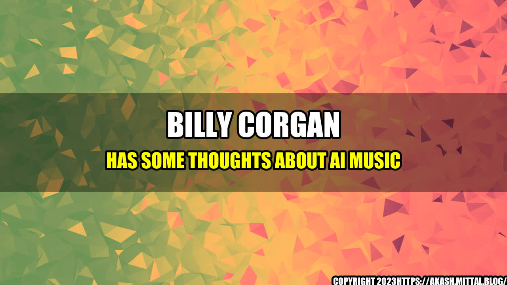

Billy Corgan Has Some Thoughts About AI Music
Billy Corgan, the lead singer of the Smashing Pumpkins, has always been at the forefront of music innovation. He played a major role in shaping the alternative rock sound of the '90s, and has embraced new technologies and formats throughout his career.
Recently, Corgan has turned his attention to the rise of AI-generated music. In a series of interviews and social media posts, he has expressed both excitement and concern about the capabilities of artificial intelligence in the music industry.
As an artist who has always valued authenticity and human connection in his music, Corgan's perspective on AI music is especially intriguing. His insights offer valuable perspectives on the role of technology in music creation and consumption.
- According to a report by MarketsandMarkets, the AI in the music market is expected to grow from $153 million in 2020 to $1.5 billion by 2028.
- In 2020, a song created by an AI algorithm called "Daddy's Car" was nominated for an Ivor Novello award for composition. The algorithm was created by researchers at Sony CSL in Paris.
- In 2018, rapper Taryn Southern released an entire album called "I Am AI," which was created using AI-generated music.
and Case Studies
As someone who has been making music for over 30 years, Corgan has a wealth of experience to draw from. He has seen firsthand how technology has changed the way we make and consume music.
One of his biggest concerns with AI music is that it could lead to a lack of originality and creativity. In an interview with Forbes, he said, "When we start talking about using algorithms to create music, we're getting into dangerous territory because that takes out the human element. It's almost like we're saying that people can't be creative anymore."
However, Corgan also sees the potential for AI to be a powerful tool for artists. He has experimented with using AI to generate lyrics and melodies for his own songs, and has been impressed with the results. "I came up with stuff that I liked, that sounded like me," he said in a Facebook post.
Ultimately, Corgan believes that the future of music will involve a combination of human creativity and AI technology. "People are going to figure out how to use these tools in really amazing ways," he said in an interview with Variety. "It will be a whole new space for human expression."
Conclusion
In summary, Billy Corgan's thoughts on AI music can be distilled into three main points:
- AI music has the potential to be a powerful tool for artists, but it should not replace the human element of creativity.
- There is a danger of AI music leading to a lack of originality and creativity, and artists should be cautious about relying too heavily on technology.
- The future of music will likely involve a combination of human creativity and AI technology, and artists who embrace both will be at the forefront of innovation in the industry.
References
- Billboard - Billy Corgan Weighs in on AI-Generated Music: ‘The Human Element Cannot Be Replaced'
- Forbes - Billy Corgan Interview on AI in Music: ‘The Future Of Music Is Space Travel'
- Music Business Worldwide - The AI in Music Market Will Be Worth $1.5bn by 2028, Says New Report
Hashtags: #BillyCorgan #AIMusic #MusicInnovation #MusicTechnology
Category: Music, Technology
Curated by Team Akash.Mittal.Blog
Share on Twitter Share on LinkedIn